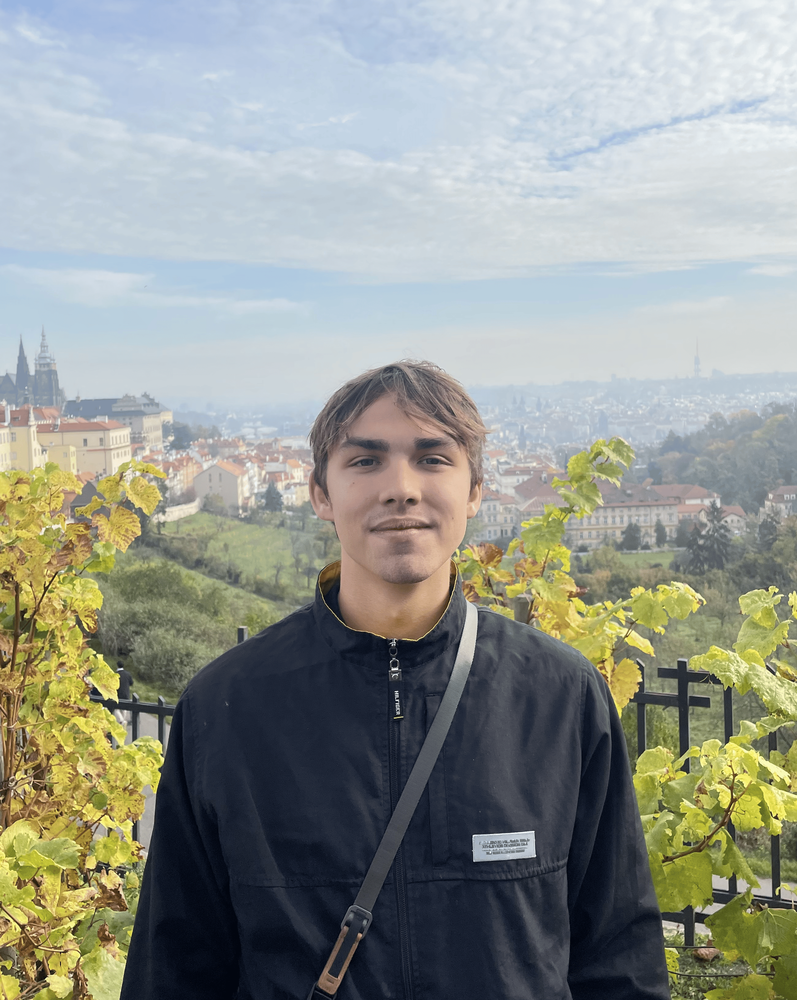

Hayden R. Johnson
PhD Student
Affiliations:
VIB Center for AI and Computational Biology
Numerical Analysis and Applied Mathematics Unit
hayden [dot] johnson [at] kuleuven [dot] be
I am a PhD student in computational neuroscience and machine learning at KU Leuven and VIB.AI, supervised by Pedro Gonçalves. Before moving to Belgium, I received my B.S. in Computer Science from the University of Minnesota, where I worked with Paul Schrater and Thomas Naselaris on resource-rational models of perception inference.
My research investigates how resource-limited biological systems achieve robust and efficient information processing. I develop theory-driven models of neural computation to explain how stochastic neural activity produces structured patterns of behavioral variability, and I build probabilistic machine learning methods, including simulation-based inference, to connect these models with empirical data.
Some other things: